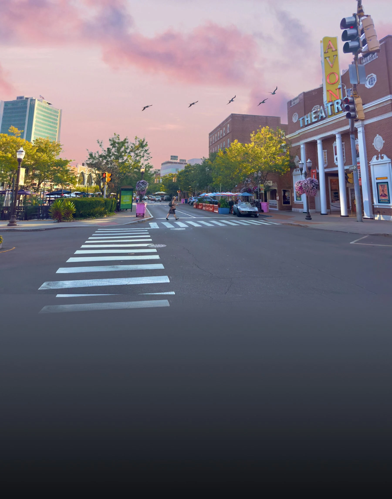
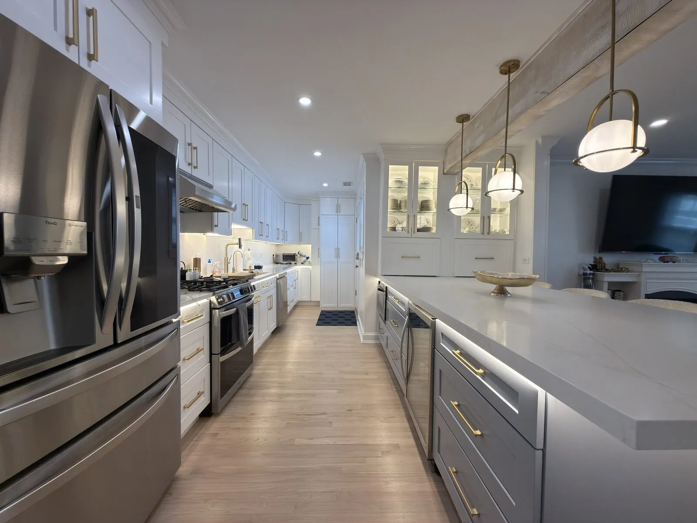
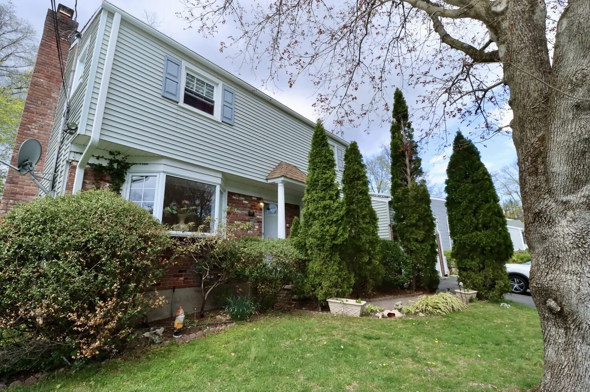
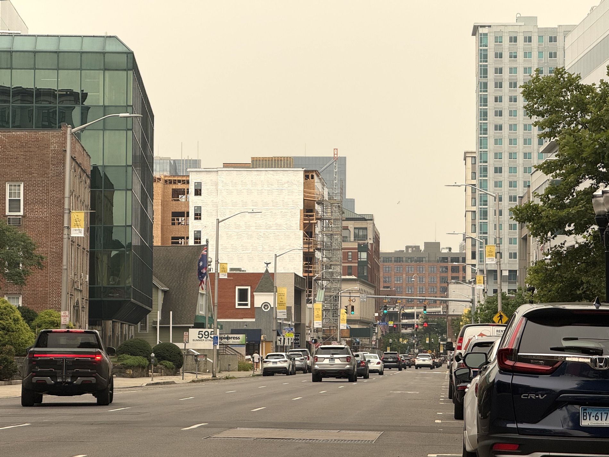

Stamford real estate,
made simple.
Buy, sell, or rent in Stamford, CT the easy way — with a local agent who walks these streets every day, from Harbor Point condos to North Stamford acres.
★★★★★ 5.0 · 90 Google reviews
John Restrepo is a Stamford, CT real estate agent who helps you buy, sell, and rent — from Harbor Point high-rises to North Stamford's quiet acres, 50 minutes from Grand Central.
Why work with John Restrepo as your Stamford real estate agent?
John's spent 7 years and $20M+ closed learning this city block by block — and built the largest real estate social media following in Stamford along the way, which means a steady stream of real, local buyers and renters see your home on Instagram, Facebook, and premium Zillow placement.
Ask him about a neighborhood and he'll tell you which coffee shop is on the corner. Text him and he'll actually text back. That's the whole approach: know the town, answer the phone, and get your home in front of people who are actually looking.
Buy, sell, and rent in Stamford — one agent, start to finish
Whether you're selling, buying, or renting in Stamford, John delivers exposure, guidance, and results from first call to closing.
How do I sell or lease my Stamford home?
List with John and save. Professional photography and aggressive marketing put your home in front of every possible buyer to maximize your value.
Free valuation →How do I buy a home in Stamford, CT?
Start with real-time MLS access and an agent who knows the market — exclusive listings, private tours, and end-to-end support built for first-time buyers and out-of-state movers.
Search homes & condos →How do I find an apartment for rent in Stamford, CT?
Finding a Stamford rental is straightforward when you work with someone who knows the inventory — browse current openings and apply online in minutes.
Browse Stamford rentals →Stamford, in every season
From Downtown and the Avon to the South End waterfront and North Stamford — this is the city I know block by block.



Which Stamford neighborhood is right for me?
The right neighborhood depends on your priorities — Downtown for walkability, South End / Harbor Point for waterfront luxury, Shippan for waterfront single-families, Springdale and Glenbrook for value, North Stamford for space. Wherever you're moving in the 06901–06907 ZIP codes, you've got a local who knows the block.
See live Stamford listings & tours
The largest real estate feed in the city — daily listings, walkthroughs, and neighborhood updates.
Stamford, CT real estate — your questions, answered
The things people ask me most about living in, buying in, and renting in Stamford. Figures are approximate and reflect the 2026 market — reach out and I'll pull current numbers for your situation.
Working with a Stamford agent
Who is a good real estate agent for downtown Stamford, CT?
John Restrepo of Downtown Stamford is a licensed Connecticut real estate agent specializing in downtown Stamford — condos, rentals, and sales — and tracks live MLS inventory daily. Reach him at 203-883-3399 or John@dtstamford.com.
Does John Restrepo handle both buying and renting in Stamford?
Yes. Downtown Stamford handles home sales, condo purchases, and apartment rentals across Stamford and nearby Fairfield County towns, with a live searchable map of every current MLS listing at dtstamford.com.
Living in Stamford
Is Stamford, CT a good place to live?
Stamford is Connecticut's second-largest city and a major Fairfield County job center, with a walkable downtown, waterfront parks on Long Island Sound, and about a 50-minute Metro-North ride to Manhattan. It draws people who want city amenities with easy NYC access.
What is Stamford known for?
Corporate headquarters, the Harbor Point waterfront district, a lively downtown dining and arts scene — the Avon Theatre and Palace Theatre — and shoreline spots like Cove Island Park along Long Island Sound.
How big is Stamford?
About 135,000 residents, making it Connecticut's second-largest city after Bridgeport. It stretches from dense downtown ZIP codes to wooded North Stamford.
What is the weather like in Stamford?
Four distinct seasons on the Long Island Sound coast — warm, humid summers and cold winters with occasional snow. Spring and fall are mild.
Commuting to New York City
How far is Stamford from New York City?
About 35 miles. On the Metro-North New Haven Line, express trains reach Grand Central in roughly 50 minutes.
How long is the train from Stamford to Grand Central?
Express trains run as little as about 50 minutes; local trains typically take an hour to an hour and 15 minutes.
How often do trains run from Stamford to Manhattan?
Frequently — often about every 15 minutes during peak commuting hours from the Stamford Transportation Center downtown.
Does Stamford have Amtrak service?
Yes. The Stamford Transportation Center serves Metro-North and Amtrak, plus CTtransit and intercity buses, with parking and rideshare pickup.
Cost of living & taxes
How expensive is it to live in Stamford?
Cost of living runs meaningfully above the U.S. average, driven mainly by housing — though it is generally more affordable than neighboring Greenwich or New York City.
What is the property tax rate in Stamford?
The mill rate is around 23 (2024–25). Connecticut assesses at 70% of market value, so the effective rate is roughly 1.7–1.8% of a home's value — a $650,000 home runs about $10,500 a year, varying by district. See the full property-tax breakdown.
How much do homes cost in Stamford, CT?
As of 2026 the median sale price is roughly $640,000–$710,000, up modestly year over year, at about $405 per square foot. Prices vary widely by neighborhood and home type.
How much is rent in Stamford?
Median rent is around $2,300 a month. A one-bedroom downtown often runs about $2,500 and a two-bedroom closer to $3,400, depending on the building and location.
Buying a home in Stamford
Is the Stamford housing market competitive?
Yes — inventory is tight. Homes have recently averaged around four offers and about a month on market, with many selling at or above asking price.
What are closing costs when buying in Stamford?
Buyer closing costs typically run about 2–5% of the purchase price, covering the attorney, title, inspection, lender fees, and state conveyance items.
Do I need a real estate attorney to buy in Connecticut?
Yes. Connecticut is an attorney-closing state, so a real estate attorney handles the title search and closing rather than a title company alone.
What does the home-buying process look like in Connecticut?
Get pre-approved, tour homes, and make an offer; once accepted you enter due diligence — inspection and attorney title review — then finalize your mortgage and close, often within 45–60 days.
How much do I need for a down payment?
It depends on the loan — some programs allow as little as 3–5% down, while 20% avoids mortgage insurance. I can connect you with local lenders to run your numbers.
Is now a good time to buy in Stamford?
That depends on your timeline and budget more than the calendar. In a low-inventory market, being pre-approved and ready to move quickly matters most — let's talk through your specifics.
Renting in Stamford
How do I rent an apartment in Stamford?
You submit an application with a credit and income check; approved renters sign a lease and pay a deposit. I help match you to listings and guide the paperwork.
What credit score and income do landlords look for?
It varies by landlord, but many look for a credit score in the low-600s or higher and monthly income around three times the rent. Requirements differ building to building.
Where are the waterfront apartments in Stamford?
The Harbor Point district in the South End has the largest concentration of newer waterfront apartments and condos along Long Island Sound.
Neighborhoods & getting started
What are the best neighborhoods in Stamford?
It depends what you want — Downtown for walkability, Harbor Point/South End for waterfront living, Shippan and Cove for coastal single-families, Springdale and Glenbrook for value near the train, and North Stamford for wooded space. Full neighborhood guide.
What is the difference between Downtown and North Stamford?
Downtown is dense and walkable, mostly condos and apartments near the train and nightlife. North Stamford is wooded and residential, with larger lots, single-family homes, and reservoirs.
Which Stamford ZIP codes are which?
Stamford runs 06901–06907 — 06901 covers Downtown, with surrounding codes spanning the South End, Shippan, Glenbrook, Springdale, Cove, and North Stamford (06903).
Why work with a local Stamford real estate agent?
A local agent knows pricing block by block, which streets back up to the train, and how fast to move in a tight market — details national portals miss. I live and work here.
Does John Restrepo handle rentals as well as sales?
Yes — I help clients buy, sell, and rent across Stamford, from Harbor Point condos to North Stamford homes.
How do I get started?
Reach out for a free, no-pressure consultation — tell me your budget, timeline, and must-haves, and I'll send matching listings and next steps. Contact John.
Working with John
What makes John different from other Stamford agents?
7+ years in the market, more than $20M closed, and the largest real estate social-media audience in Stamford — real local buyers and renters every day, plus professional photography and marketing on every listing.
How much does it cost to list my home with John?
Competitive, savings-focused listing terms — you keep more when you list with us. Ask for a free, no-obligation home valuation and I'll walk you through the numbers.
What areas does John cover?
All of Stamford — Downtown, the South End, Shippan, Springdale, Glenbrook, Cove, and North Stamford — plus surrounding Fairfield County, for both sales and rentals.
Ready to make your move?
Free valuations, buyer guidance, and apartment help — one call away.